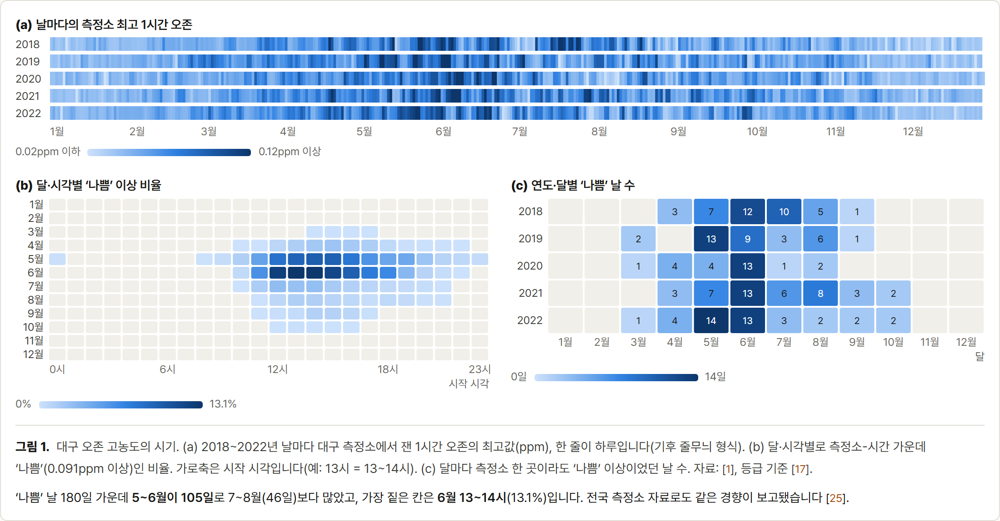
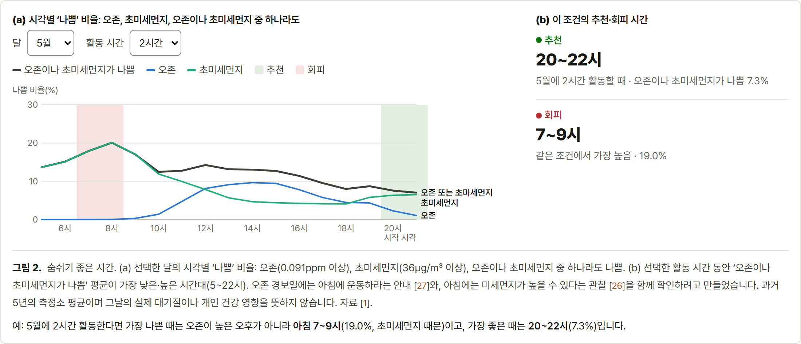
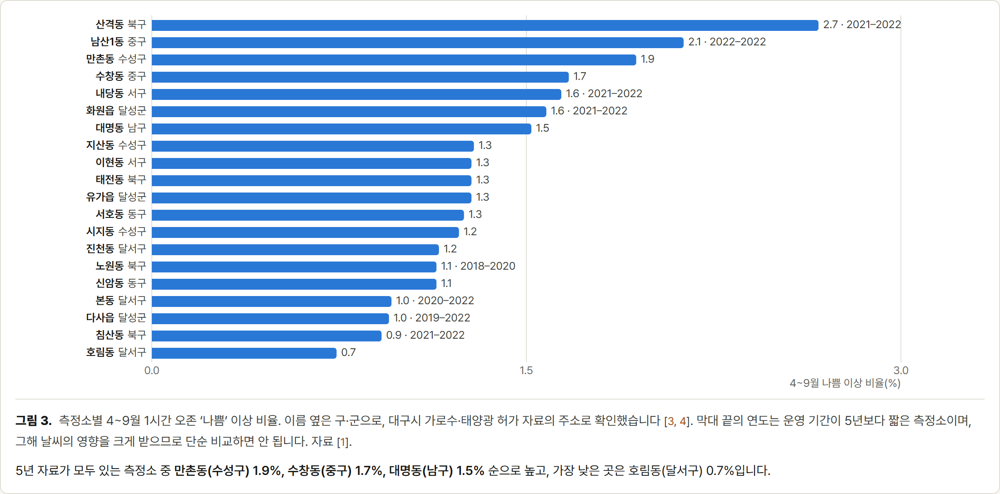
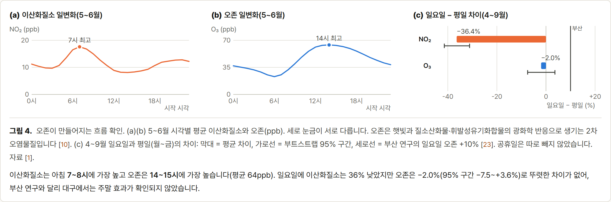
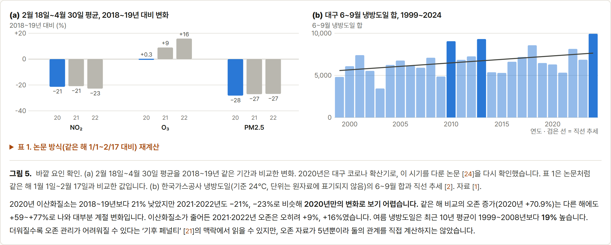
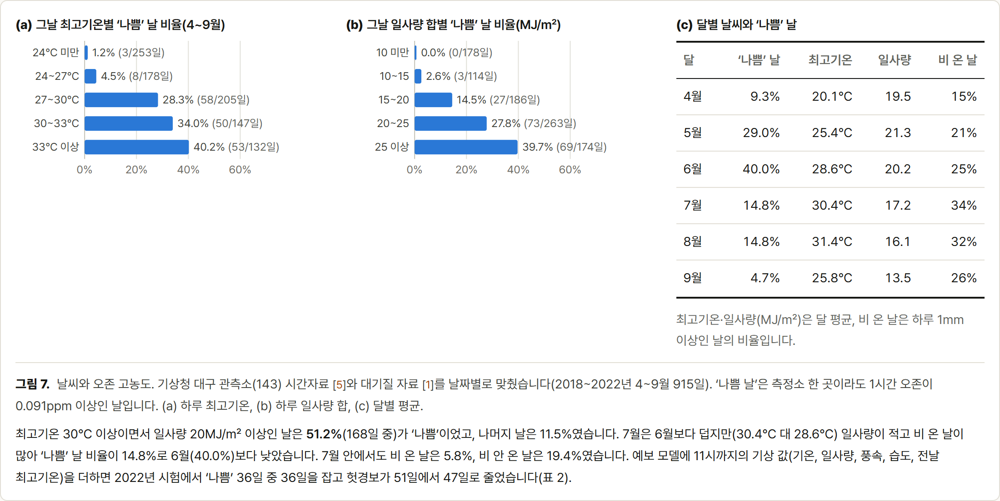
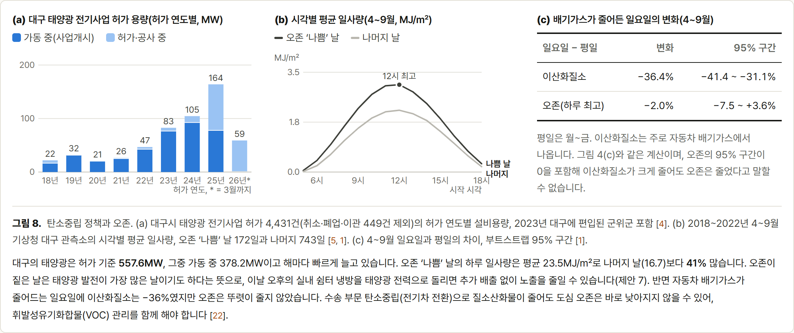
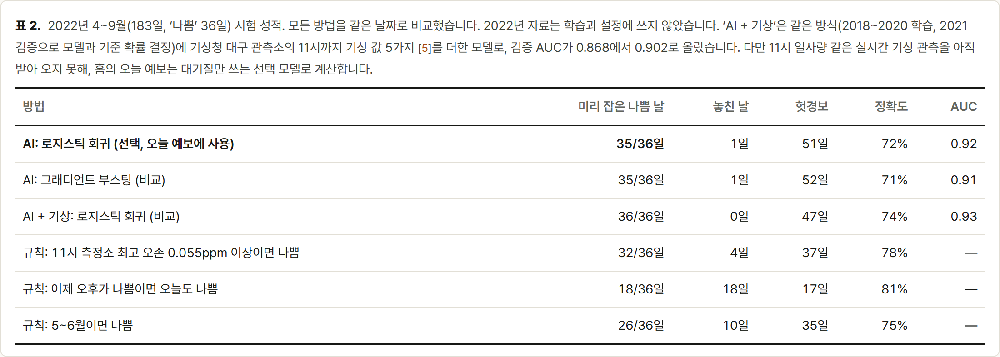
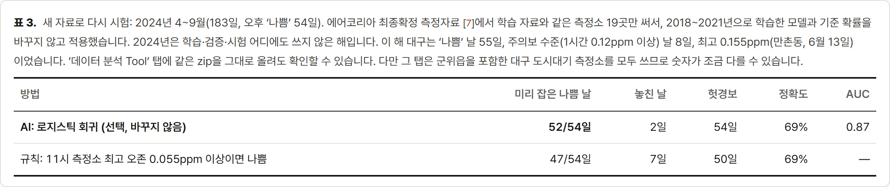
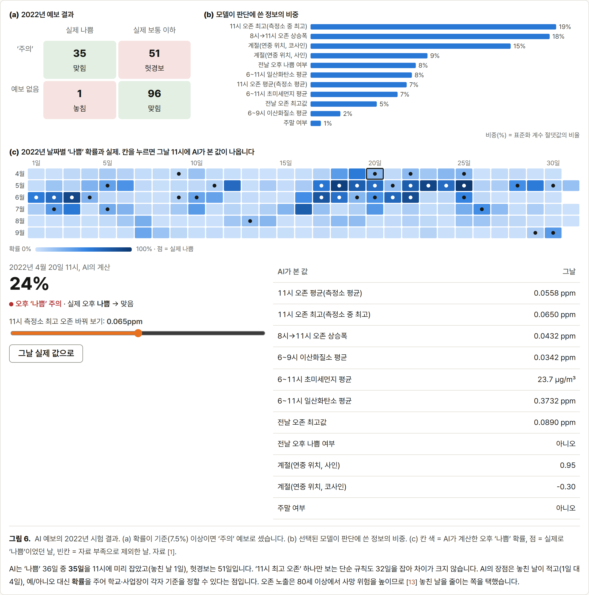

2026 대구광역시 기후·환경·탄소중립 공공데이터 AI 활용대회 부문 2(공공데이터 분석·시각화) 웹사이트(출품작 본문): https://daegu-ozone.pages.dev/ · 이 문서는 사이트의 분석을 옮긴 요약 보고서입니다.
대구시 대기질 측정소 20곳의 2018~2022년 시간자료(659,348행)와 기상청 대구 관측소 시간자료로 오존 고농도가 언제·어디서·왜 생기는지 분석하고, 11시까지의 자료로 그날 오후 오존 ‘나쁨’을 미리 알려 주는 AI 예보를 만들었습니다. 예보는 에어코리아 실시간 측정값으로 매일 다시 계산되며, 결과를 탄소중립 정책과 연결해 7가지 제안을 냈습니다.
180일오존 ‘나쁨’(1시간 0.091ppm↑) 날, 5년
51.2%30℃↑·일사 20MJ/m²↑ 날 중 ‘나쁨’ 비율
35/36일AI가 11시에 미리 잡은 2022년 ‘나쁨’ 날, 2024년 새 자료 52/54일
+41%‘나쁨’ 날의 일사량(태양광 발전에 유리)
1. 데이터와 방법
연번
공공데이터
제공기관
이용허락범위
1
대구광역시_대기질 항목별 시간평균자료
대구광역시(보건환경연구원)
이용허락범위 제한 없음
2
기상청_지상(종관, ASOS) 시간자료 조회서비스
기상청
공공누리 제1유형(출처표시)
3
한국환경공단_에어코리아_대기오염정보
한국환경공단
공공누리 제3유형(출처표시, 변경금지)
4
한국가스공사_월별 시도별 냉난방도일 통계현황
한국가스공사
이용허락범위 제한 없음
5
대구광역시_가로수정보
대구광역시
이용허락범위 제한 없음
6
대구광역시_태양광전기사업허가현황
대구광역시
이용허락범위 제한 없음
7
에어코리아 최종확정 측정자료 2024년(대구 도시대기 측정소만 추출)
환경부·한국환경공단(에어코리아)
에어코리아 누리집 공개 자료(출처
모든 수치는 공개된 분석 코드(사이트의 ‘자료·출처’ 탭, analyze.cjs·ozone-core.js)가 원본에서 다시 계산합니다. ‘나쁨 날’은 측정소 한 곳이라도 1시간 오존이 0.091ppm 이상인 날입니다. AI 예보는 4~9월 날마다 11시까지의 대기질 값 11가지로 그날 13~18시 ‘나쁨’ 여부를 맞히며, 2018~2020년 학습, 2021년 검증으로 모델과 기준 확률을 정하고 2022년 시험 자료는 마지막에 한 번만 썼습니다.
2. 언제: 5~6월 오후


3. 어디서와 왜



4. 날씨: 덥고 햇빛이 강한 날

5. 탄소중립과 오존

6. AI 예보: 11시에 오후 ‘나쁨’ 알리기



사이트 홈의 ‘오늘의 AI 오존 예보’는 서버가 에어코리아 실시간 측정정보(학습과 같은 측정소 19곳)를 받아 오고, 브라우저가 학습 때와 같은 코드로 입력값과 확률을 계산합니다. 11시 값이 나오기 전에는 전날 예보와 실제 결과를 보여 줍니다. 4~9월 밖의 확률은 참고용으로 표시합니다.
7. 정책 제안
5~6월 낮 12시~오후 6시, 학교 체육과 야외 행사 시간 옮기기 ‘나쁨’ 날의 대부분이 5~6월에 있고 가장 위험한 때는 6월 13~14시입니다(그림 1). 서울시도 14~17시를 오존이 높아지는 시간으로 안내합니다 [15].
11시 AI 예보로 당일 오후 ‘주의’ 알림 2022년 시험에서 ‘나쁨’ 36일 중 35일을 11시에 잡았습니다(표 2). 이 사이트는 에어코리아 실시간 측정값으로 이 계산을 매일 하고 있어(홈의 ‘오늘의 AI 오존 예보’) 공공 알림 시스템으로 옮기기 쉽습니다. 오존 위험이 큰 80세 이상 [13]이 머무는 노인 쉼터·요양시설과 학교에 우선 알리고, 헛경보(51일)를 고려해 ‘주의’ 단계로 운영합니다.
시민용 ‘숨쉬기 좋은 시간표’ 안내 오존과 초미세먼지를 함께 보면 5월에는 아침 7~9시가 가장 나쁘고 20~22시가 가장 좋습니다(그림 2). 달마다 다른 시간표를 운동·산책 안내에 쓸 수 있습니다.
수송 탄소중립(전기차 전환)과 휘발성유기화합물(VOC) 관리를 함께 배기가스가 줄어드는 일요일에 이산화질소는 −36%였지만 오존은 뚜렷이 줄지 않았고(그림 8), 이산화질소가 줄어든 2021·2022년에 오존은 오히려 높았습니다(그림 5). 수도권 연구도 NOx 감소가 5월 오존 증가의 주원인이라고 봤습니다 [22]. 전기차 전환 같은 수송 탄소중립 정책에 도장 등 VOC 작업을 햇빛이 강한 오후 2~5시에 피하도록 한 권고 [14]를 묶어, 5~6월 오후 작업 시간 조정을 함께 추진합니다.
고농도 측정소 주변부터 그늘·실내 쉼터 안내 5년 자료가 모두 있는 측정소 중 만촌동(수성구), 수창동(중구), 대명동(남구)의 4~9월 ‘나쁨’ 비율이 높았습니다(그림 3). 이 지역부터 오후 실내 쉼터와 알림을 우선 안내합니다.
WHO 수준까지 알리고, 폭염 대책과 묶기 대구는 5년 동안 836일이 WHO 8시간 권고를 넘었습니다 [18, 19]. 여름이 더워지고 있어(그림 5) 기후 페널티 [21]를 고려해 오존 안내를 폭염 대책과 함께 운영할 것을 제안합니다. 최고기온 30℃ 이상이고 햇빛이 강한 날은 51%가 ‘나쁨’이었습니다(그림 7).
오존 ‘주의’ 날 실내 쉼터를 태양광 전력으로 오존 ‘나쁨’ 날은 하루 일사량이 다른 날보다 41% 많아 태양광 발전이 가장 많은 날이고, 대구의 태양광은 가동 중인 것만 378MW입니다(그림 8). 11시 AI 예보가 ‘주의’를 내면 공공건물 태양광이 있는 경로당·도서관을 오후 실내 쉼터로 열어, 추가 온실가스 배출 없이 오존 노출을 줄입니다.
8. 사이트에서 바로 쓰는 기능
오늘의 AI 오존 예보: 서버가 에어코리아 실시간 측정값(학습과 같은 측정소 19곳)을 받아 오고, 11시 값이 나오면 그날 오후 ‘나쁨’ 확률을 홈에 띄웁니다. 2018~2021년으로 학습한 모델을 그대로 씁니다.
데이터 분석 Tool: 에어코리아 최종확정 측정자료(연도별 zip·월별 엑셀)나 대구시·에어코리아 형식 CSV를 올리면 브라우저 안에서만 계산합니다. 기간·측정소·항목·집계·기준선 필터, 시계열 탐색(끌어서 확대, 십자선), 초과 사건 목록(1시간·8시간 기준), 측정소 비교표(달·시각·요일별 평균·최고·95백분위·나쁨 시간·자료 비율), 자료 품질 점검, 원자료 표, CSV·그림 내보내기, 분석이 끝나면 자동으로 만들어지는 요약 그림을 제공합니다. 최근 30일 실측 자료는 버튼 하나로 불러와 같은 방법으로 분석합니다.
진단과 개선 방향(데이터 분석 Tool): 분석이 끝나면 그 기간의 오존이 좋은 편인지 나쁜 편인지를 공식 기준값만으로 판정합니다(주의보 수준 0.12ppm인 날이 있으면 ‘매우 나쁜 편’, ‘나쁨’ 0.091ppm 이상인 날이 있으면 ‘나쁜 편’, 8시간 환경기준 0.06ppm만 넘으면 ‘조금 나쁜 편’, 모두 없으면 ‘좋은 편’). 2018~2022년 대구의 같은 달 평균과의 비교, ‘나쁨’이 몰린 시간·달·측정소를 함께 보여 주고, 그 숫자에서 나온 할 일(야외 활동 시간 옮기기, 미리 알릴 달과 장소, 11시 AI 예보 활용, 자동차 배출과 휘발성유기화합물을 함께 줄이기)을 근거와 출처를 붙여 제시합니다. 판정 규칙을 화면에 그대로 적었고, 자동 계산이며 공식 판정이 아님을 밝혔습니다.
오존·환경 뉴스: 네이버 뉴스 검색(NAVER API HUB)으로 오존, 대구 환경, 기후·대기 주제의 최신 기사 제목과 링크를 30분마다 받아 옵니다. 받지 못하면 구글 뉴스 검색, 언론사 공개 RSS, 배포 때 저장한 목록 순서로 대신합니다.
지금 대구: 에어코리아 실측 오존(측정소 평균)과 Open-Meteo의 기온·바람·일사량 현재값을 15분마다 보여 줍니다. 날씨 값은 서버가 받아 10분 동안 저장해 두므로 보는 사람의 통신망과 상관없이 같은 값이 나오고, Open-Meteo가 응답하지 않으면 기온과 바람은 MET Norway 예측값으로 대신합니다.
9. 한계
분석(그림 1~8)은 공공데이터포털에 공개된 대구시 자료 2018~2022년으로 했습니다. 2024년은 에어코리아 최종확정 측정자료로 AI 예보만 다시 시험했고(표 3), 2023년과 2025년 이후는 넣지 않았습니다. 2024~2026년 전국 주의보 발령일은 날씨 영향으로 줄었다는 발표도 있습니다.
오늘의 AI 예보는 대기질 값만 쓰는 모델로 계산합니다. 기상 값을 더한 모델이 시험 성적이 더 좋았지만(표 2), 11시 일사량 같은 실시간 기상 관측을 아직 받아 오지 못합니다. 기상 분석은 대구 관측소 한 곳의 값이라 측정소별 날씨 차이는 반영하지 못합니다.
오늘의 예보는 4~9월 자료로 학습한 모델이라 10~3월의 확률은 참고용입니다. 실시간 측정값은 확정 전 자료라 나중에 바뀌거나 빠질 수 있습니다.
측정소마다 운영 기간이 다르고 2021년 이후 측정소가 늘었습니다. 연도·측정소 비교는 이 차이를 감안해 읽어야 합니다.
주말 효과 분석에서 공휴일을 빼지 않았고, 2020년 비교는 날씨를 통제하지 않았으므로 원인(코로나)을 증명하지 않습니다.
‘숨쉬기 좋은 시간’ 비율은 과거 5년 측정소 평균이며 그날의 실제 대기질이나 개인 건강 영향을 대신하지 않습니다. 외출 전에는 에어코리아 실시간 정보를 확인하세요.
보도·영상 자료는 원 보고서를 소개한 2차 자료일 수 있어, 가능한 경우 발표 기관과 보고서 이름을 함께 적었습니다.
참고문헌 38개(공공데이터, 공식 통계, 보고서, 논문, 공익광고 영상)와 각 수치의 출처는 사이트 ‘자료·출처’ 탭에 번호로 정리했습니다. 그림 속 [n]은 그 번호입니다. 서체: Pretendard(SIL Open Font License). 분석 기준일 2026-11-09.